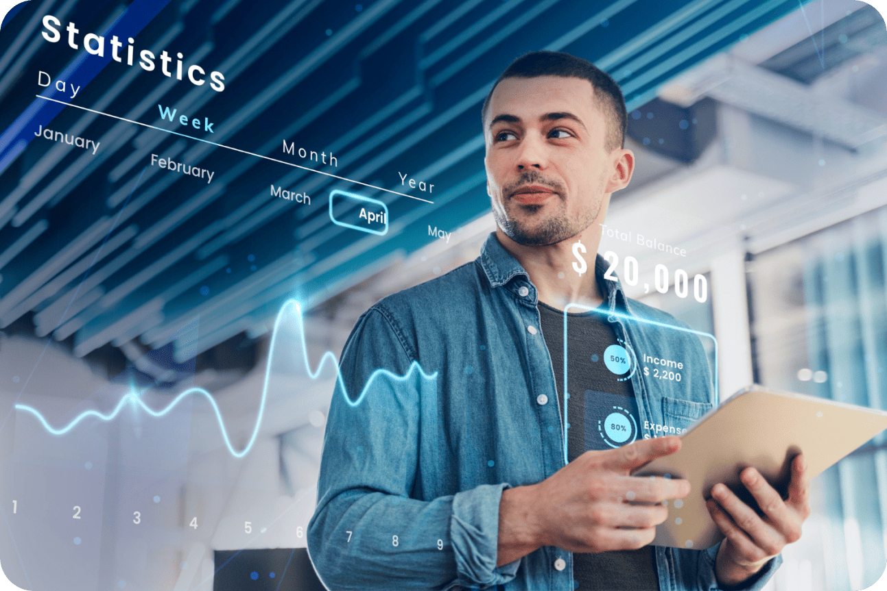

ECO FRIENDLY LOGISTICS : REDUCING CARBON FOOTPRINT THROUGH DIGITAL INNOVATION
INTRODUCTION
In an era marked by heightened environmental awareness and the urgent need to combat climate change, industries across the spectrum are being called upon to reimagine their operations through a sustainable lens. The logistics sector, known for its intricate web of movements that keep the global
economy running, is no exception. Enter Liveasy — a transformative force that is revolutionizing logistics by not only enhancing efficiency and cost-effectiveness but also driving significant strides towards a greener, more sustainable future.
CONTENT
The logistics industry, with its vast network of vehicles, freight, and global supply chains, has traditionally been associated with a substantial carbon footprint. The transportation of goods over long distances, often involving multiple modes such as trucks, ships, and airplanes, contributes significantly to greenhouse gas emissions. The challenge has been to balance the increasing demand for efficient and timely delivery with the pressing need to minimize the industry's environmental impact.
1. OPTIMIZED ROUTES, REDUCED EMMISIONS
Digital technologies are enabling logistics companies to optimize transportation routes with pinpoint accuracy. Real-time data and AI algorithms analyze variables like traffic conditions, weather patterns, and fuel efficiency to chart the most eco-friendly routes. This not only reduces fuel consumption but also slashes emissions, a win-win scenario for both businesses and the environment.
2. EFFICIENT FLEET MANAGEMENT
Connected sensors on vehicles provide real-time insights into their performance. This facilitates proactive maintenance, minimizing breakdowns and ensuring that every vehicle operates at peak efficiency. Well-maintained fleets translate to reduced emissions and a longer lifespan for vehicles, further reducing their environmental impact.
3. PAPERLESS PROCESSES
The move towards paperless documentation and digital communication within logistics operations has dual benefits. Not only does it enhance efficiency by reducing administrative delays, but it also significantly cuts down on paper consumption, a notable environmental gain.

4. COLLABORATIVE PLATFORMS, REDUCED WASTE
Digital platforms that connect various stakeholders in the supply chain foster better communication and collaboration. This minimizes instances of overproduction, incorrect orders, and inefficient resource allocation, all of which contribute to a lower carbon footprint.
CONCLUSION
The convergence of digital innovation and eco-friendly
practices is steering the logDigital platforms that connect various stakeholders in the supply chain foster better communication and collaboration. This minimizes instances
of overproduction, incorrect orders, and inefficient resource allocation, all of which contribute to a lower carbon footprint.istics industry towards a promising future. With Liveasy, through optimized routes, efficient fleet management, and a host of other innovative solutions, logistics companies are embracing their role as environmental stewards. The marriage of technology and sustainability is not just a trend; it's a paradigm shift that has the potential to redefine the way goods are transported, contributing significantly to the global
effort to combat climate change. As the wheels of progress
continue to turn, it's evident that the road to a greener,
more sustainable logistics industry is paved with digital
innovation.